Die Alchemischen Bildwelten sind ein von der Kunst- und Bildwissenschaft noch selten begangenes Terrain. Das verwundert, denn die zur Imagination anregenden Bilder spielten für die Naturmagier, Hermetiker und Alchemiker der Frühen Neuzeit eine tragende erkenntnistheoretische Rolle. In den Bildern selbst wähnte man eingegrabene Chymische Geheimniss (Vorrede, Atalanta fugiens). Die ‚Eigenständigkeit‘ der Bilder der Alchemie zeigt sich unter anderem dadurch, dass Bildtafeln, die nicht nur als Erklärbilder, sondern auch als Imaginationshilfen dienten, dem Gusto des Besitzers folgend, an unterschiedlichen Stellen in die Bücher eingebunden oder gänzlich ohne erklärenden Text verausgabt wurden. Dieses Bildverständnis führte sogar zu einem heftigen ‚Bilderstreit‘, wortreich und öffentlich ausgetragen zwischen Robert Fludd und Johann Kepler auf der Gegenseite.
Erst im späten Mittelalter entwickelte sich in rasanter Geschwindigkeit eine komplexe Ikonographie der Alchemie, deren letzter Entwicklungssprung im Wesentlichen von den Verlagen De Bry und Jennis als kreativen Bildermanufakturen mitgetragen wurde. Märchenhaft anmutende Bildserien für Emblembücher über alchemisch-medizinische Illustrationen bis hin zu Meditations- und Systemblättern, die den Adepten spirituelle Anleitung und Erbauung bieten sollten, entstanden in kurzer Zeit zwischen 1615 und 1625/30 in Frankfurt. Die von Symbolen und Zeichen, vor allem aber von mehrdimensionalen Allegorien geprägte Bildsprache der Frankfurter Alchemica illustrata thematisiert wiederholt die Grundfragen zum Verhältnis von ‚oben‘ und ‚unten‘ oder blickt in die Natur, gar in die meriansche Landschaft. Prozesshafte, kontinuierliche Narrationen (z.B. Stationen des Opus magnum) tragen der dynamischen Transformationskraft der Alchemie Rechnung. Noch wenig untersucht sind die engen Verbindungen zur christlichen und mythologischen Ikonographie oder die Rezeption der Antike. Auch ist wenig bekannt über die Rolle der (entwerfenden) Künstler, deren innovative Bildprogramme nur mit Kenntnissen der Alchemie zu erklären sind. Während bereits im 19. Jahrhundert einsetzende Untersuchungen aus den Bereichen der Kulturwissenschaften (auch Semiotik), der Philosophie, Wissenschaftsgeschichte und Literaturwissenschaften die verschlungenen Wege der Bildprogramme entschlüsselt und verschiedene Sachgruppen gebildet haben, fehlt es an medienübergreifenden stilkritischen, motivgeschichtlichen oder ikonologischen Analysen.
Weltbilder – Weltlandschaften
Titelblatt für Johann Daniel Mylius, Opus medico-chymicum: Continens tres tractatus sive basilicas: Quorum prior inscribitur basilica medica. secundus Basilica chymica. tertius Basilica philosophica, Frankfurt: Lucas Jennis 1618 und 1620, hier 1618, Bd. 1, UB Frankfurt, Sign. Occ. 1150 Bd. 1 (und 8° R 118.2001)
Obwohl es eine der Ikonen der Alchemie enthält – die Alchemische Weltlandschaft –, ist das Opus medico-chymicum bislang nicht Gegenstand von umfassenden ikonographischen Untersuchungen geworden. Im Rahmen des Projektes zu den Frankfurter Alchemica illustrata liegt es nun vollumfänglich in digitalisierter Form vor. Der Vorbesitzer des Frankfurter Exemplars mit der Signatur Occ. 1150 war der Frankfurter Stadtarzt Johann Hartmann Beyer (1563-1625), der zugleich jenem ausgewählten Personenkreis angehörte, dem der Verfasser sein fast 3.000 Seiten umfassendes Hauptwerk gewidmet hat. weiterlesen…
Matthäus Merian d.Ä., Die Alchemische Weltlandschaft, in: Johann Daniel Mylius, Opus medico-chymicum, Frankfurt: Lucas Jennis 1618, Teil 3 (Bd. 4), bez. Titel In praefationem tertiam / Basilicae Philsophicae; unten rechts MMerian. fecit. Aus dem Vorbesitz von Johann Hartmann Beyer, UB Frankfurt, Sign. Occ. 1150 Bd. 3
Die sogenannte Alchemische Weltlandschaft gilt als die Inkunabel der alchemischen Druckgraphik. Die Radierung, weiterlesen…
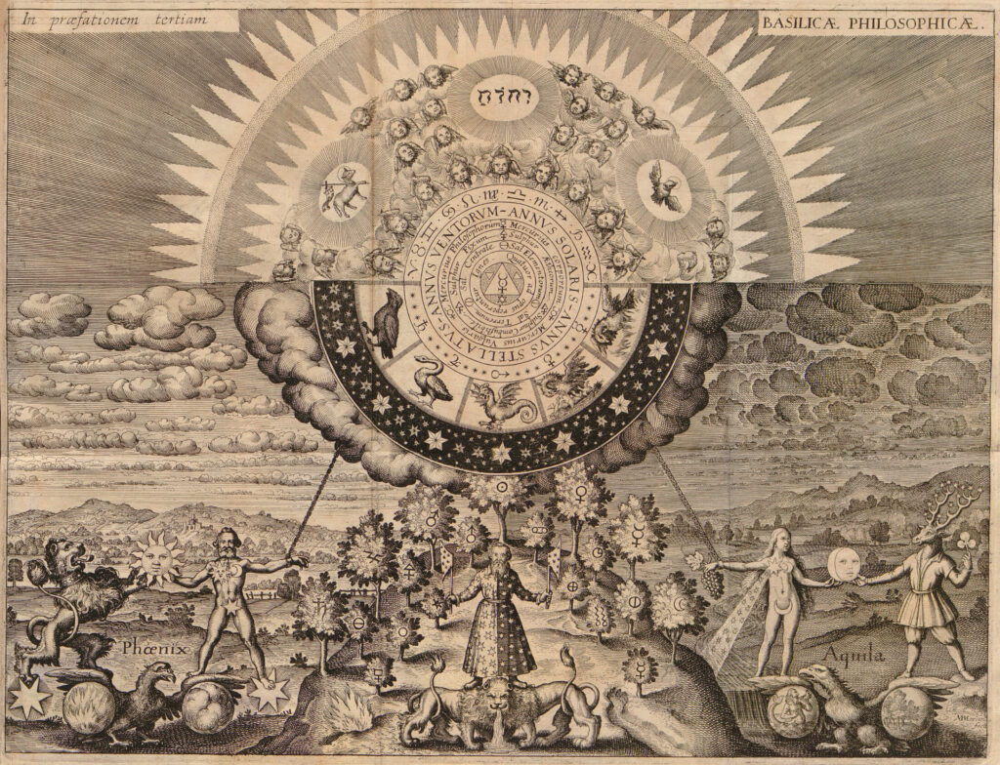
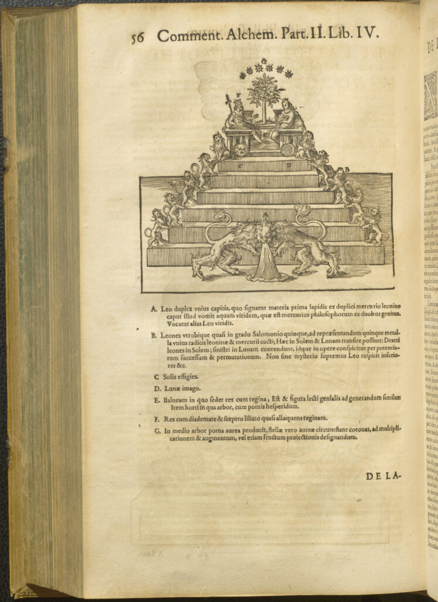
Ikonographische Vorlagen der Alchemischen Weltlandschaft
hier gezeigt Georg Keller (?), Alchemisches Emblem mit Leo duplex vnius capitis, in: Commentariorum alchymiæ, Teil II, De lapide philosophorum, Tractus IV, S. 56, Holzschnitt, in: Andreas Libavius, Alchymia, Frankfurt: Peter Kopff 1606, UB Frankfurt, Sign. Occ. 29 weiterlesen…
‚Siegel der Philosophen‘ Oswald Croll und Johann Daniel Mylius, in: Johann Daniel Mylius, Opus medico-chymicum, Frankfurt: Lucas Jennis 1618/20, Bd. 3, Tafel 10 (rechts unten), UB Frankfurt, Sign. Occ. 1150 Bd. 3
Hierbei handelt es sich um die letzten zwei Embleme der sogenannten ‚Siegel der Philosophen‘ im genannten Werk von 1618. Diese sind eine bislang kaum beachtete Ansammlung von 160 kleinformatigen Medaillons, die mit einer lateinischen Devise versehen und jeweils einer alchemischen Autorität oder einem entsprechenden Traktat zugeordnet sind. Die kreisrunden Siegel bilden den krönenden Abschluss der Basilica phylosophia, dem dritten Teil des Opus medico-chymicum, das von Lucas Jennis in Frankfurt verlegt wurde und unter anderem die großformatige weiterlesen…
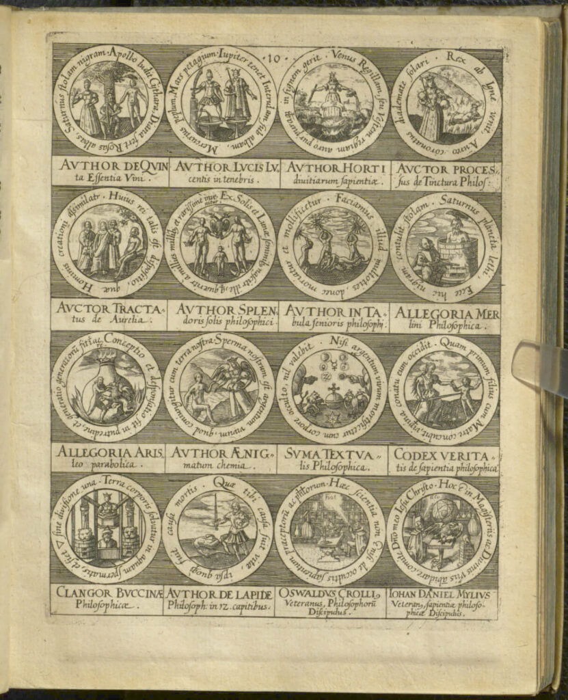
Matthäus Merian d.Ä. für Johann Baptist Großschedel von Aicha, Calendarium naturale magicum perpetuum, Oppenheim: Johann Theodor de Bry, 1616-1618, 114 x 56,5 cm, aufgezogen auf Leinen, bez. unten links Auth: Johan Babtista Großschedel ab Aicha; unten rechts Io: Theodore de Bry, excud.; Thico Brahae inuentor 1582, Bibliothèque nationale de France, Inv. Nr. GED-5082
Das Calendarium naturale magicum perpetuum profundissimam rerum secretissimarum contemplationem, totiusque philosophiæ cognitionem complectens geht in seiner ambitionierten inhaltlichen Konzeption auf den Alchemisten und Autoren Johann Baptist Großschedel ab Aicha (1577- nach 1631) zurück und wurde von Matthäus Merian d.Ä. in die Darstellung der hochformatigen Druckgraphik transferiert. weiterlesen…
Ikonographie Hermes Trismegistos
Ikonographie des Magiers und Erfinders der Alchemie Hermes Trismegistos in den Bildfindungen der Oppenheim-Frankfurter Verlagen Johann Theodor de Bry und Lucas Jennis (1) Johann Theodor de Bry, Emblem des Hermes Trismegistos, in De divinatione et magicis praestigiis 1616 (2) Michael Maier, Symbola Aureae Mensae duodecim nationum, Lucas Jennis Frankfurt 1617 (3) Matthäus Merian d.Ä., Hermes Trismegistos in Atalanta Fugiens, Emblem XXI, Johann Theodor de Bry 1617
Den subordinierten Urheber der Alchemie, Hermes Trismegistos, sehen wir in den Bildfindungen der Frühen Neuzeit typischerweise mit dem Attribut der Armillarsphäre, einem Instrument zur Berechnung stellarer Konstellationen, ausgestattet. Deutet dieselbe einerseits auf seine Rolle als Astrologe hin, weiterlesen…


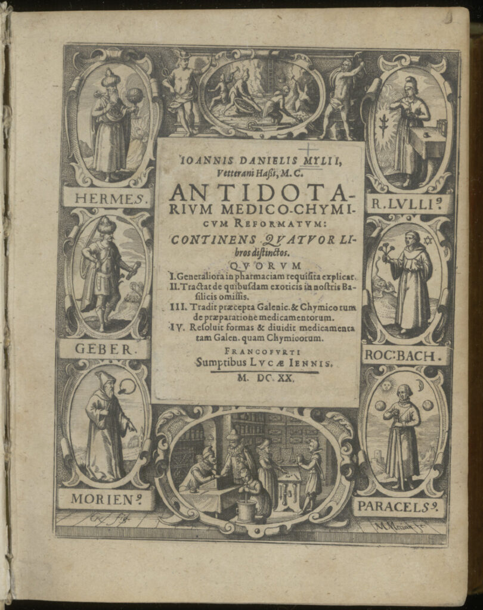
Medizinisch-alchemistische Bücher
Matthäus Merian d.Ä., nach dem Entwurf von Georg Keller (1568-1634/40), Titelblatt für Johann Daniel Mylius, Antidotarium medico-chymicum reformatum, Frankfurt: Lucas Jennis 1620, bez. GK fig. und MMerian. fe.; UB Frankfurt, Sign. 8° R 786.9562
Das radierte Titelblatt des Antidotarium medico-chymicum reformatum von 1620 von Johann Daniel Mylius zeigt eine weitere Arbeit aus dem Œuvre Matthäus Merian d.Ä. für ein alchemistisches Buch. Die Signatur des Georg Keller (1568-1634/40) verrät, dass der Entwerfer nicht Merian, sondern sein älterer Kollege Keller war. weiterlesen…
Signatur GK fig. – Georg Keller (1568-1634/40) als Entwerfer für Merian d.Ä. Titelblatt für Johann Daniel Mylius, Antidotarium, Frankfurt: Lucas Jennis 1620
Auf dem Titelblatt für Johann Daniel Mylius‘ Antidotarium, herausgegeben von Lucas Jennis, sind zwei Signaturen angebracht: GK fig., zu sehen auf der unteren linken Seite des Titelblattes, und MMerian fe., zu finden unten rechts. Diese Kürzel geben Aufschluss über Entwerfer und Stecher des Werks. weiterlesen…

Matthäus Merian d.Ä., Titelblatt für Daniel Sennert, Institutionum medicinae Libri V. Editio tertia, Wittenberg: Zacharias Schürers [d.Ä.] Erben 1628, UB Frankfurt, Sign. 8° R 41.72/4 (Titelblatt fehlt; Autorenporträt von 1627 enthalten), hier gezeigt Exemplar ULB Sachsen-Anhalt, Sign. Ug 101
Die 1611 zum ersten Mal erschienene Abhandlung Institutionum Medicinæ Libri V. des Wittenberger Professors für Medizin, Daniel Sennert (1572-1637), wurde 1620 und 1628 nochmals aufgelegt – nun mit einem Titelblatt –, welches beide Male Matthäus Merian d.Ä. entwarf und radierte. weiterlesen…
Matthäus Merian d.Ä., Titelblatt für Daniel Sennert, Practicae Medicinae Libri, Wittenberg: Zacharias Schürer Erben 1628-1636, Titelblatt Liber primus, signiert: M. Merian fe:, nicht in der UB Frankfurt vorhanden, hier gezeigt Exemplar British Museum, London, Inv. Nr. 1895,1031.75
Womöglich weil das Titelblatt zu Daniel Sennerts (1572-1637) Medizinbuch nicht in einem der Frankfurter Verlage erschienen ist, fehlte es bislang in den Abhandlungen zu Merians Illustrationstätigkeit für die iatrochemische Medizin und Alchemie. weiterlesen…
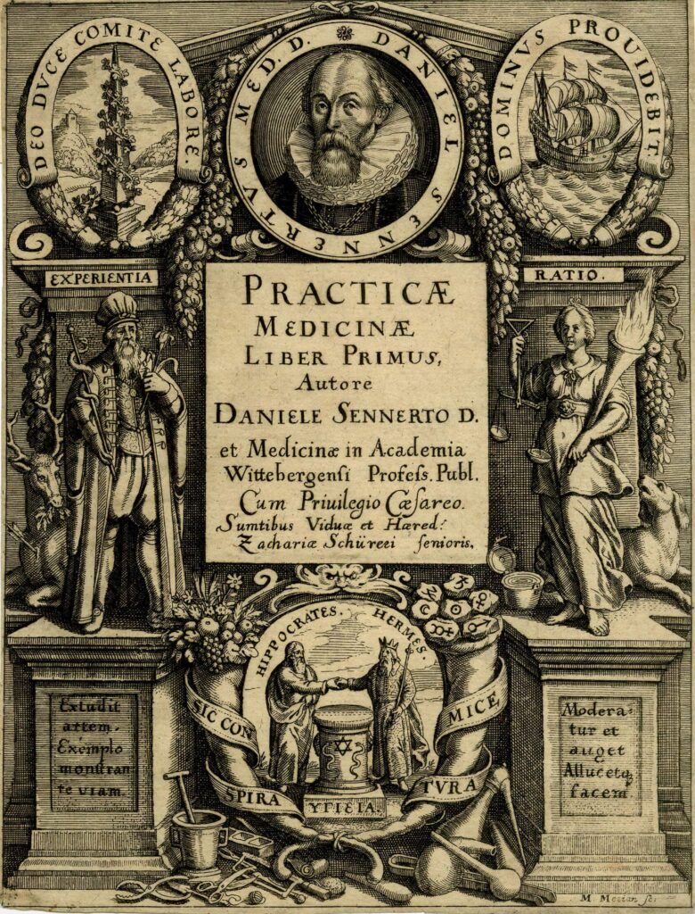
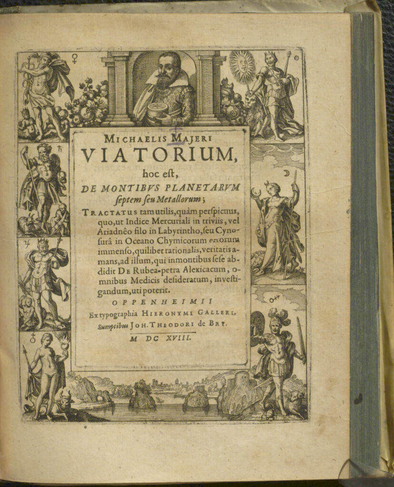
Alchemistisch-astrologische Bücher
Matthäus Merian d.Ä., Titelblatt für Michael Maier, Viatorium, hoc est, de monitibus planetarum septem seu metallorum, Oppenheim: Johann Theodor de Bry 1618, UB Frankfurt, Slg. G. Freytag H 1329 (und weiteres Exemplar Sign. 8° R 523.6701)
Das radierte Titelblatt des Viatoriums von Michael Maier von 1618 ist ein weiteres prägnantes Beispiel der Alchemica illustrata aus dem Œuvre von Matthäus Merian dem Älteren. Auch hier werden zwei grundlegende Intentionen der Alchemieliteratur miteinander vereint: Die allegorische Verbildlichung einer alchemischen Theorie in Verbindung mit einer, für Unkundige nur schwerlich ergründbaren, Verschlüsselung. weiterlesen…
Michael Maier, Viatorium, hoc est, de monitibus planetarum septem seu metallorum, Oppenheim: Johann Theodor de Bry 1618, UB Frankfurt, Slg. G. Freytag H 1329 (und weiteres Exemplar Sign. 8° R 523.6701)
Beim Viatorium (1618), dessen Titelblatt Merian ausgeführt hat, handelt es sich um ein Werk Maiers, dem bisher eher wenig Beachtung geschenkt wurde. weiterlesen…

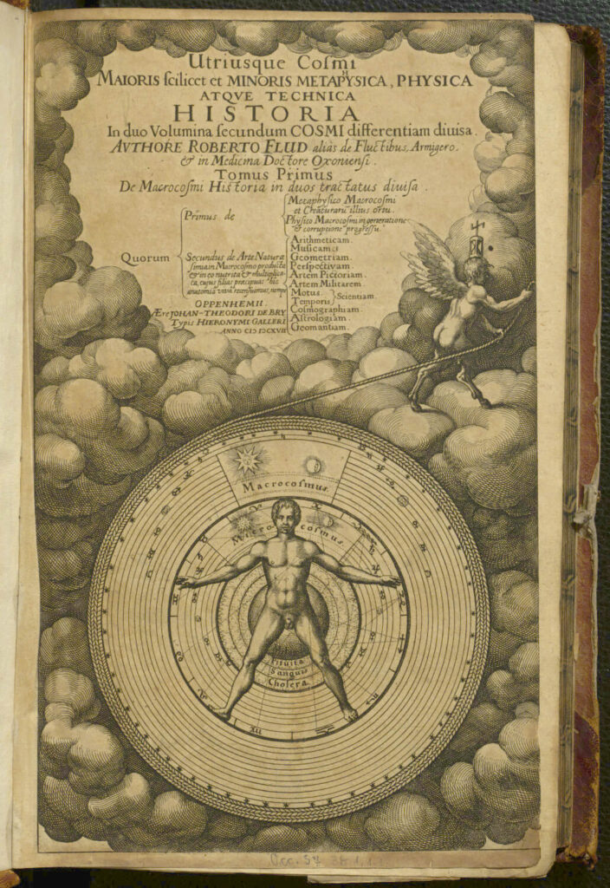
Alles zusammen – Universalenzyklopädien
Matthäus Merian d.Ä., Titelblatt für Robert Fludd, Utriusque cosmi maioris scilicet et minoris metaphysica, physica atqve technica historia: in duo volumina secundum cosmi differentiam diuisa, Oppenheim: Johann Theodor de Bry 1617ff., Bd. 1 (Tomus primus, Tractatus primus) De macrocosmi structurae ejusque creaturarum originis historia, 1617, UB Frankfurt, Sign. Occ. 37 Bd. 1,1 (und weiteres Exemplar Occ. 15 Bd. 1,1)
Die pansophische Enzyklopädie Utriusque cosmi maioris scilicet et minoris metaphysica, physica atqve technica historia wurde von dem englischen Arztalchemisten Robert Fludd (1574-1637) geschrieben. Derselbe publizierte in den Jahren von 1617 bis 1625 dieses Opus magnum, weiterlesen…
Matthäus Merian d.Ä., Integræ Naturæ speculum, Artisque imago für Robert Fludd, Utriusque cosmi maioris scilicet et minoris metaphysica, physica atqve technica historia, Oppenheim: Johann Theodor de Bry 1617ff, Bd. 1 (Tomus primus, Tractatus primus) De macrocosmi structurae ejusque creaturarum originis historia, 1617, S. 4-5 (Doppelseite), UB Frankfurt, Sign. Occ. 15 (weitere Exemplare Occ. 37 und Occ. 1158)
Der englische Arzt und Alchemist Robert Fludd (1574-1637) veröffentlichte ab 1617 eine umfangreiche Enzyklopädie über den Mikro- und Makrokosmos, die unter dem Titel, weiterlesen…
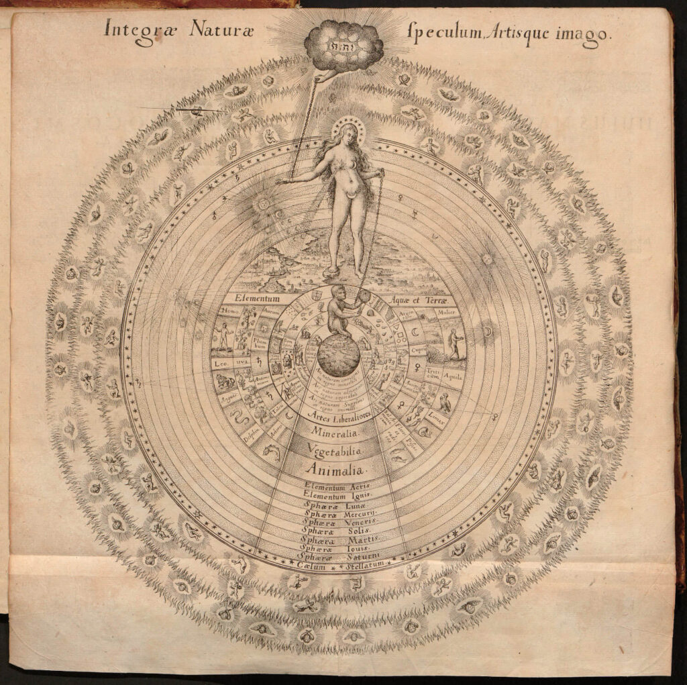
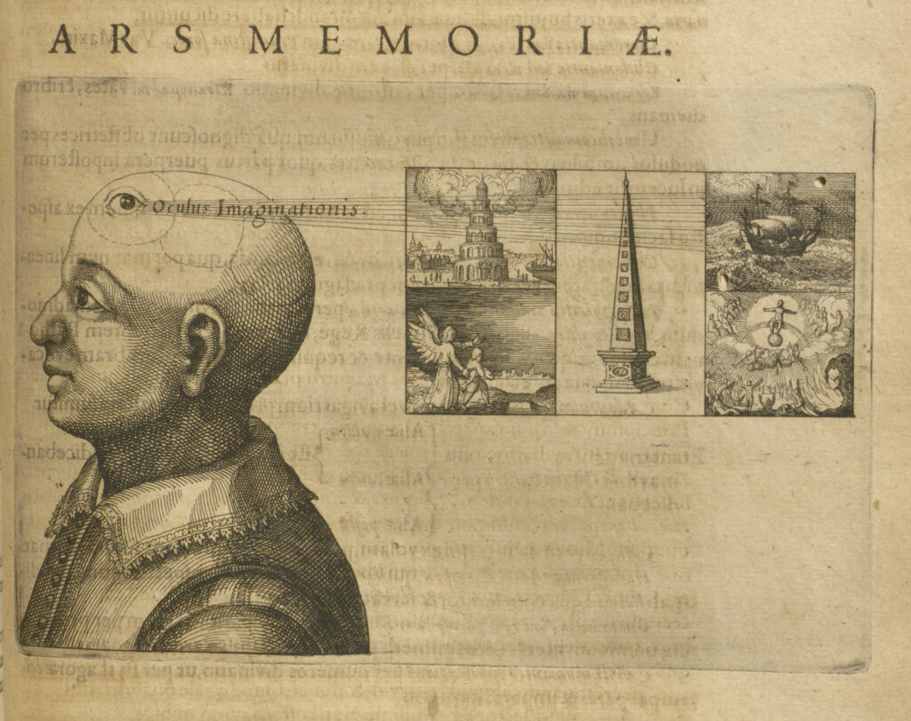
Merian, Fludd und die Bilder
Matthäus Merian d.Ä., Ars memoriæ für Robert Fludd, Utriusque cosmi maioris scilicet et minoris metaphysica, physica atqve technica historia: Tomvs Secvndvs De Svpernatvrali, Naturali, Præternaturali et Contranaturali Microcosmi historia, in Tractatus tres distributa, Oppenheim: Johann Theodor de Bry 1619, hier Tractatus Primi, Sectionis II., Portio III: Deanimæ memorativæ scientia, quæ vulgo ars memoriæ vocatur. Ars Memoriæ, 1619, S. 47, UB Frankfurt, Sign. Occ. 15 Bd. 2.1 weiterlesen…
(l) Entwurf für Ars physiognomia für Robert Fludd, montierte Federzeichnung, UB Frankfurt, MS lat. qu. 15, fol. 144r, Detail
(r) Matthäus Merian d.Ä., Ars physiognomia für Robert Fludd, Utriusque cosmi maioris scilicet et minoris metaphysica, physica atqve technica historia: Tomvs secvndvs De svpernatvrali, naturali, præternaturali et contranaturali microcosmi historia, in tractatus tres distributa, Oppenheim: Johann Theodor de Bry 1619, hier Tractatus primi, Sectionis II., Portio V., S. 117, Detail, UB Frankfurt, Sign. Occ. 15 Bd. 2.1 weiterlesen…


Matthäus Merian d.Ä., Titelblatt für Robert Fludd, Anatomiae Amphitheatrum effigie triplici, more et conditione varia, designatvm, Frankfurt: Johann Theodor de Bry 1623, UB Frankfurt, Sign. 8° P 5.51 (Titelblatt und Abbildungen im UB-Exemplar nicht enthalten), hier gezeigt Exemplar Getty Research Institute, Sign. 369782, ID Nr. 1378-360
Für das Titelblatt von Robert Fludds Schauplatz der Anatomie (dt. Übersetzung) entwarf Merian d.Ä. eine komplexe Bildkomposition, die auf die drei Hauptabschnitte des Buchs hinweist. weiterlesen…


Johann Theodor de Bry und Israel de Bry, Ein Muskelmann präsentiert seine abgezogene Haut, 1605, in: Robert Fludd, Anatomiae amphitheatrvm effigie triplici, Frankfurt: Johann Theodor de Bry 1623, Teil II mit anatomischen Illustrationen, S. 63, UB Frankfurt, Sign. 8° P 5.51, hier gezeigt Exemplar Getty Research Institute, Sign. 369782, ID Nr. 1378-360
Die Illustrationen im zweiten Teil des fluddschen Amphitheatrum(s) veranschaulichen in der Logik Fludds die Anatomie des ‚äußeren‘ Menschen. Auf dem Titelblatt figuriert dafür die im rechten Kreis gezeigte Leichensektion. weiterlesen…
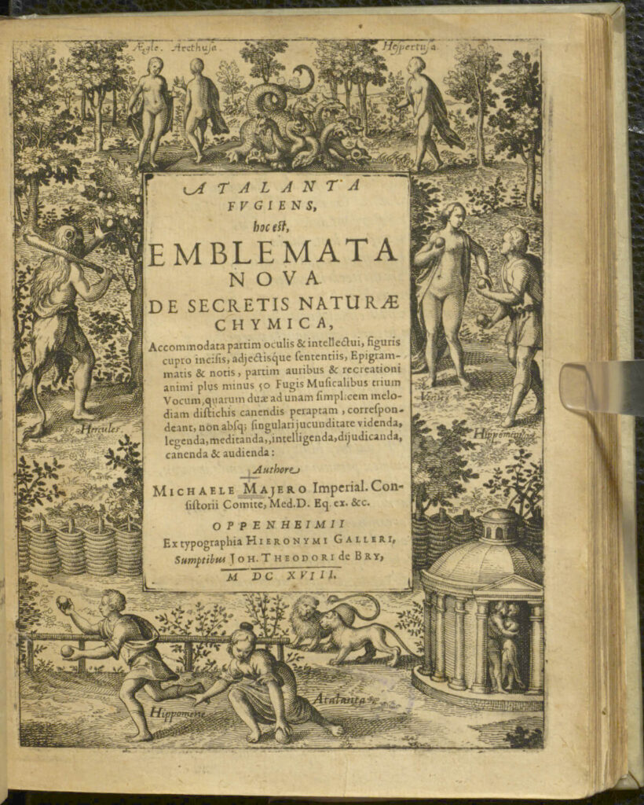
Emblembücher
Matthäus Merian d.Ä., Titelblatt für Michael Maier, Atalanta fugiens, hoc est, emblemata nova de secretis naturae chymica, Oppenheim: Johann Theodor de Bry 1618, UB Frankfurt, Sign. 8° P 5.75
Die Atalanta fugiens sind ein mythoalchemisches Emblembuch von Michael Maier (1568-1622), das erstmals 1617 und erneut 1618 in Zusammenarbeit mit dem Kupferstecher Matthäus Merian d.Ä. auf den Frankfurter Büchermarkt kam. Erst die Ausgabe von 1618 bietet das bekannte, von Matthäus Merian d.Ä. gestochene weiterlesen…
Matthäus Merian d.Ä., Emblem I für Michael Maier, Atalanta fugiens, hoc est, Emblemata nova de secretis naturae chymica, Oppenheim: Johann Theodor de Bry 1618, Emblem I, S. 13, UB Frankfurt, Sign. 8° P 5.75
In der Atalanta fugiens beschreibt Michael Maier (1568-1622) in fünfzig Emblemen und dazugehörigen Fugen alchemistische Prinzipien basierend auf seinem Verständnis der Mythoalchemie. Maier, Alchemist und zwischenzeitlich Hofarzt von Rudolf II. in Prag, verarbeitete darin unter anderem auch rosenkreuzerische Gedanken. Erste Kontakte mit den Rosenkreuzerschriften hatte Maier auf der Frankfurter Buchmesse weiterlesen…
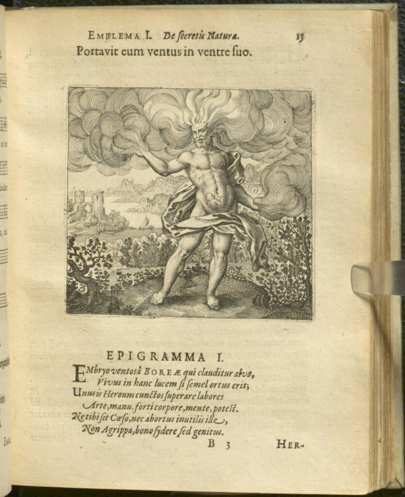
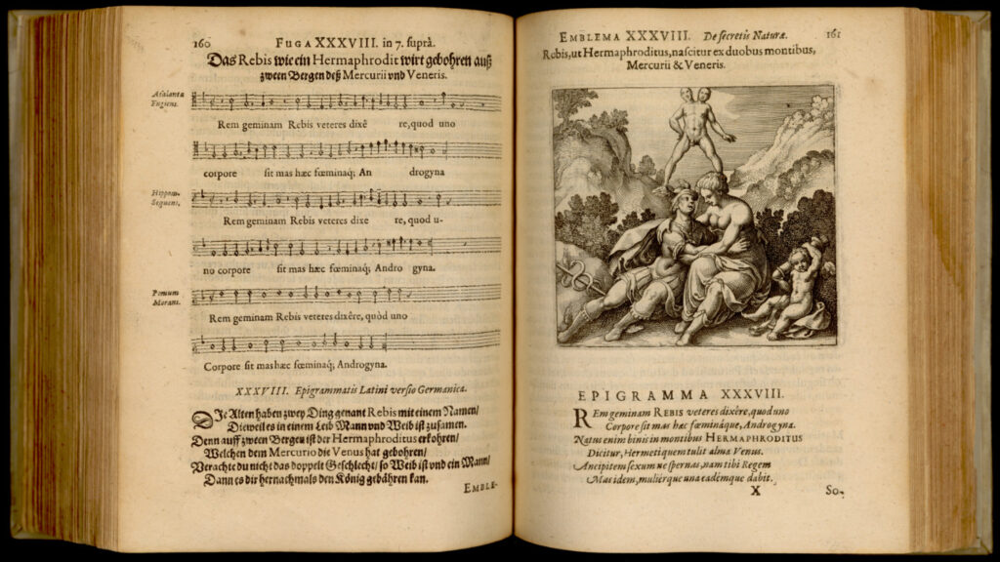
Matthäus Merian d.Ä., Emblem XXXVIII für Michael Maier, Atalanta fugiens, Oppenheim: Johann Theodor de Bry 1618, S. 161, UB Frankfurt, Sign. 8° P 5.75
Emblem XXXVIII trägt den Titel Rebis, ut Hermaphroditus, nascitur ex duobus montibus, Mercurii &Veneris oder Das Rebis wie ein Hermaphrodit wirt gebohren auß zween Bergen deß Mercurii und Veneris. Es tritt in der für die Atalanta fugiens typischen Kombination mit Fuga, deutscher Übersetzung der Subscriptio, Inscriptio und dem Emblem mit lateinischer Subscriptio auf. weiterlesen…
Goldener König und schwarzer Wolf – Alchemische Bildsprache und alchemistische Laborpraxis
Matthäus Merian d.Ä., Emblem XXIV. Regem lupus voravit & vitae crematus reddidit für Michael Maier, Atalanta fugiens, Oppenheim: Johann Theodor de Bry 1618, S. 105, UB Frankfurt, Sign. 8° P 5.75
Verblasen des Antimons im Experiment zur alchemistischen Goldreinigung, Basel 2021 weiterlesen…
Matthäus Merian d.Ä., Emblem XLII. In Chymicis versanti natura, ratio, experientia & lectio, sint dux, scipio, perspicilia, & lampas für Michael Maier, Atalanta fugiens, Oppenheim: Johann Theodor de Bry 1618, S. 177, UB Frankfurt, Sign. 8° P 5.75
Das Emblem XLII stellt eines der zentralen und in seiner Bedeutung zur Beschäftigung mit der Alchemie ganzheitlichsten in der Atalanta fugiens dar. Es zeigt die Personifikation der Natura, die einen nächtlichen Pfad entlangschreitet und ihre Fußspuren auf dem Weg hinterlässt. In der rechten Hand hält sie Blumen, in der linken verschiedene Früchte. weiterlesen…
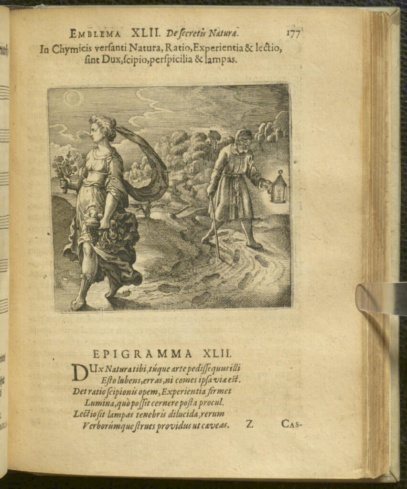
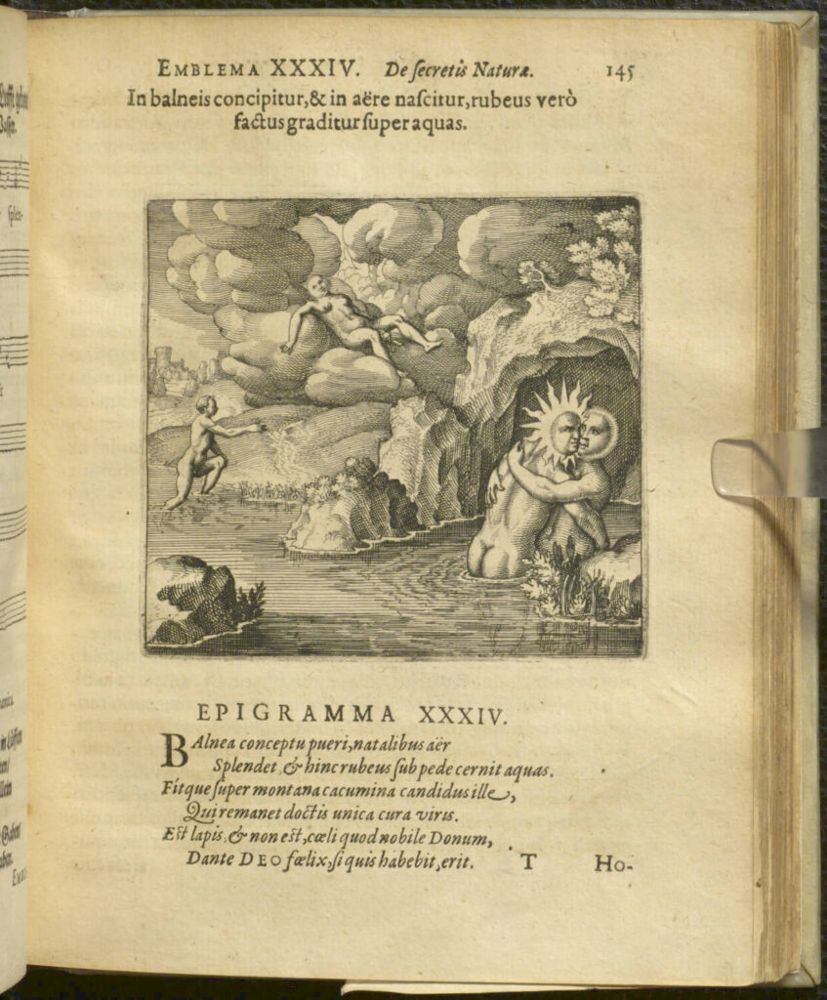
Matthäus Merian d.Ä., Emblem XXXIV. In balneis concipitur, & in aere nascitur, rubeus verò factus graditur super aquas für Michael Maier, Atalanta fugiens, Oppenheim: Johann Theodor de Bry 1618, S. 145, UB Frankfurt, Sign. 8° P 5.75
Emblem XXXIV zeigt eine Landschaft, die in verschiedene narrative Ebenen aufgeteilt ist. In deutscher Sprache verlautbart das Lemma Im Wasserbad wird er empfangen und in der Luft geboren, wenn er aber rot geworden, geht er aus dem Wasser. Zu sehen ist ein Gewässer, das in der rechten Bildhälfte in eine felsige Höhle mündet. In dieser Höhle, im Vordergrund der Darstellung weiterlesen…
Matthäus Merian d.Ä., Titelblatt für Lambspring. Das ist: Ein herzlicher Teutscher Tractat vom Philosophischen Steine, enthalten in: Johannes Rhenanus (Hermannus Condeesyanus) (Hg.), Dyas chymica tripartita, Frankfurt: Lucas Jennis 1625, S. 83-117, UB Frankfurt, Sign. 8° P 194.6015
Für das spätmittelalterliche Emblembuch Lambspring fertigte Matthäus Merian d.Ä. 17 radierte Illustrationen an, die die im Traktat geschilderten Wandlungsprozesse bei der Herstellung des Steins der Weisen allegorisch darstellen. Diese wurden – ebenfalls im Verlagshaus Lucas Jennis – erstmals 1625 in den beiden Traktatsammlungen weiterlesen…
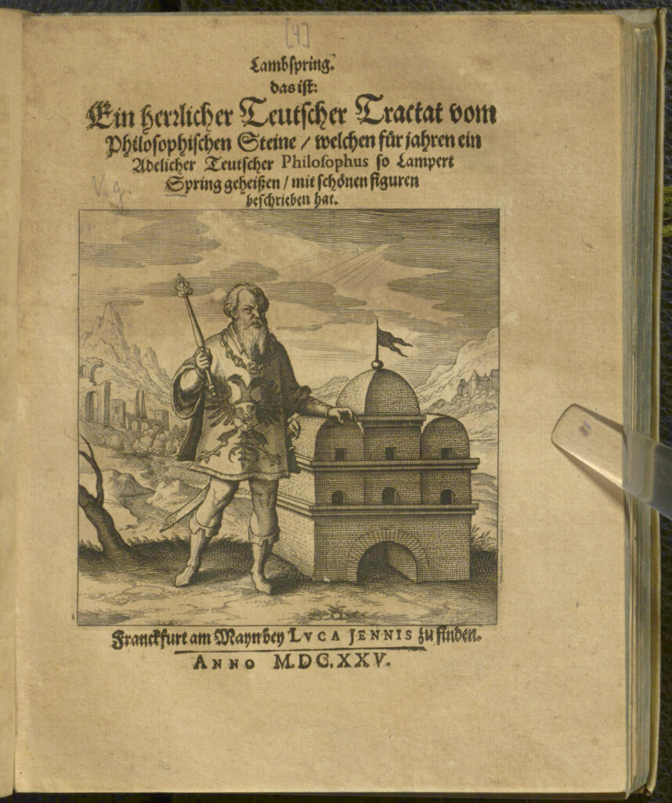
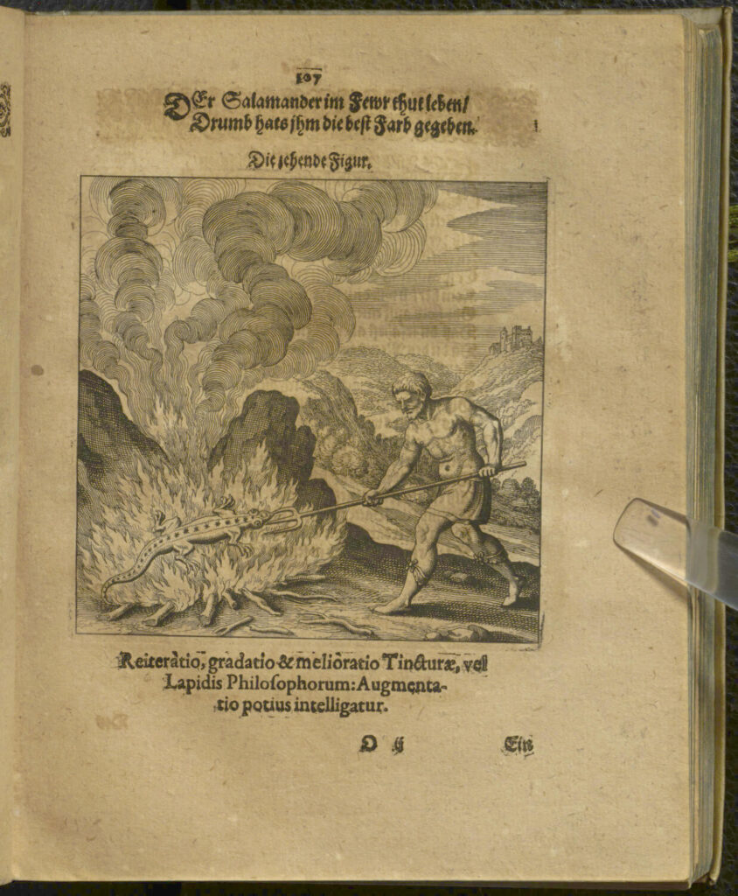
Matthäus Merian d.Ä., Salamander, Emblem X, in: Lambspring. Das ist: Ein herzlicher Teutscher Tractat vom Philosophischen Steine, in: Johannes Rhenanus (Hermannus Condeesyanus) (Hg.), Dyas chymica tripartita, Frankfurt: Lucas Jennis 1625, S. 107, UB Frankfurt, Sign. 8° P 194.6015
Figur X des spätmittelalterlichen Lambspring-Traktats thematisiert den letzten Schritt im Herstellungsprozess des Steins der Weisen, bei dem das Werk durch den Alchemisten vervollkommnet wird. Den charakteristischen Tier-Allegorien des Traktats entsprechend wird dieser letzte Schritt durch das Töten des im Feuer lebenden Salamanders symbolisiert, weiterlesen…
Kompilationen, Sammelbände
Titelblatt für Michael Maier, Symbola aureae mensae duodecim nationum, Frankfurt: Lucas Jennis 1617, UB Frankfurt, Sign. 8° P 192.5055
Symbola aureae mensae duodecim nationum ist eine Publikation des Arztes und Alchemisten Michael Maier (1568-1622), wurde 1617 von Lucas Jennis verlegt und von Anton Humm gedruckt. Hinter der Kompilation der Symbole der goldenen Tafel aus zwölf Nationen (dt. Übers.) verbirgt sich eine Art genealogische Geschichte der Alchemie, die Maier anhand herausragender Alchemisten und deren Schrifttum zusammenstellt. weiterlesen…
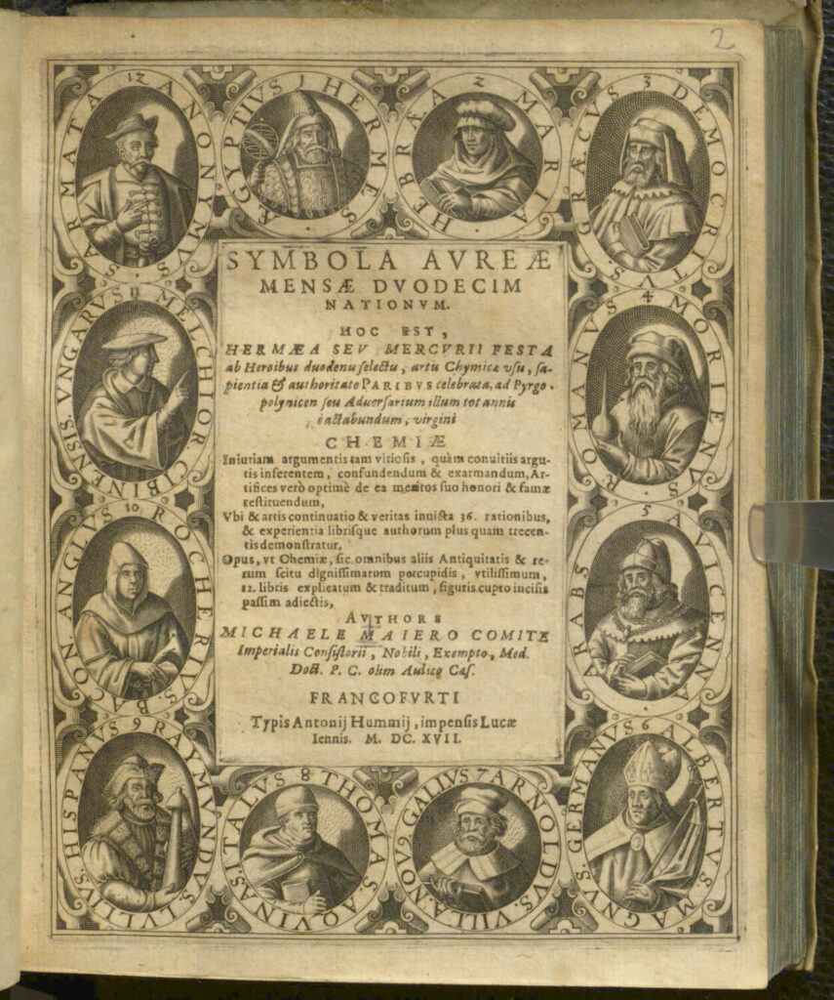
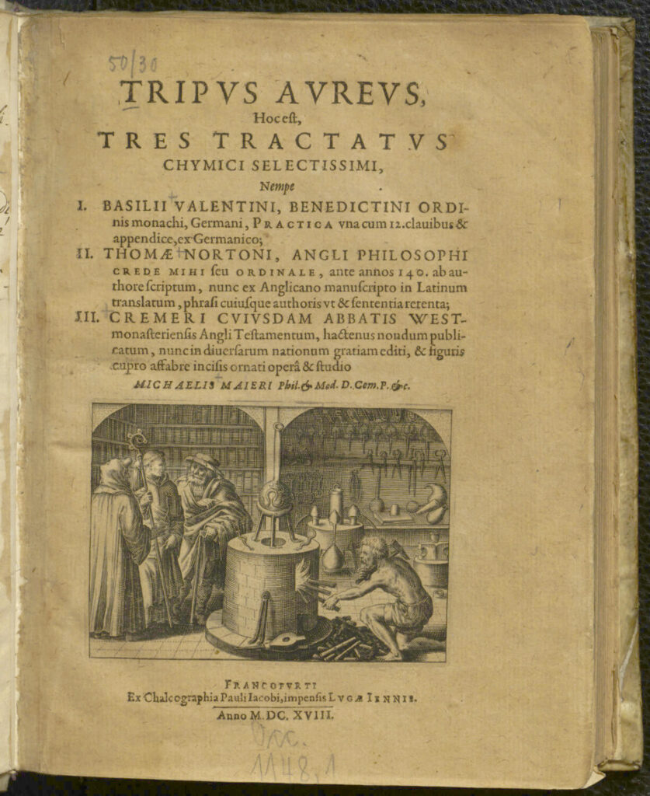
Johann Theodor de Bry / Balthasar Schwan unter Mitarbeit von Matthäus Merian d.Ä. (?), Titelblatt für Michael Maier, Tripus aureus, hoc est, tres tractatus chymici selectissimi, nempe I. Basilii Valentini Practica una cum 12 clavibus & app. II. Thomae Nortoni Crede mihi seu ordinale III. Cremeri Abbatis Westmonasteriensis Testamentum, Frankfurt: Lucas Jennis 1617, UB Frankfurt, Sign. Occ 1148,1 weiterlesen…
Matthäus Merian d.Ä., Titelblatt für Musaeum hermeticum, Frankfurt: Lucas Jennis 1625, Exemplar UB Frankfurt, Sign. 8° P 194.6013 (und erweiterte Ausgabe Musaeum hermeticum reformatum et amplificatum, aureus tractatus de philosophorum lapide, Frankfurt a.M.: Hermann Sande 1677, UB Frankfurt, Sign. 8° P 194.8014
Das Musaeum hermeticum ist, wie der Titel schon verheißt, eine Kompilation alchemistisch-hermetischer Texte und ist unter anderem mit den Illustrationen von Matthäus Merians d.Ä. ausgestattet. Vermutlich erteilte Lucas Jennis Michael Maier den Auftrag weiterlesen…
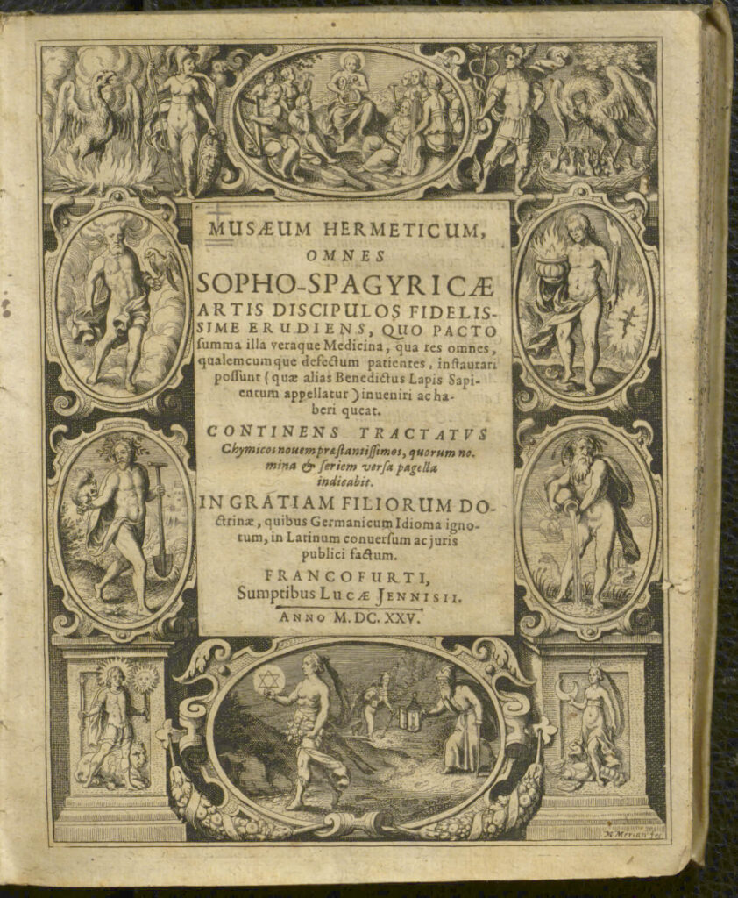
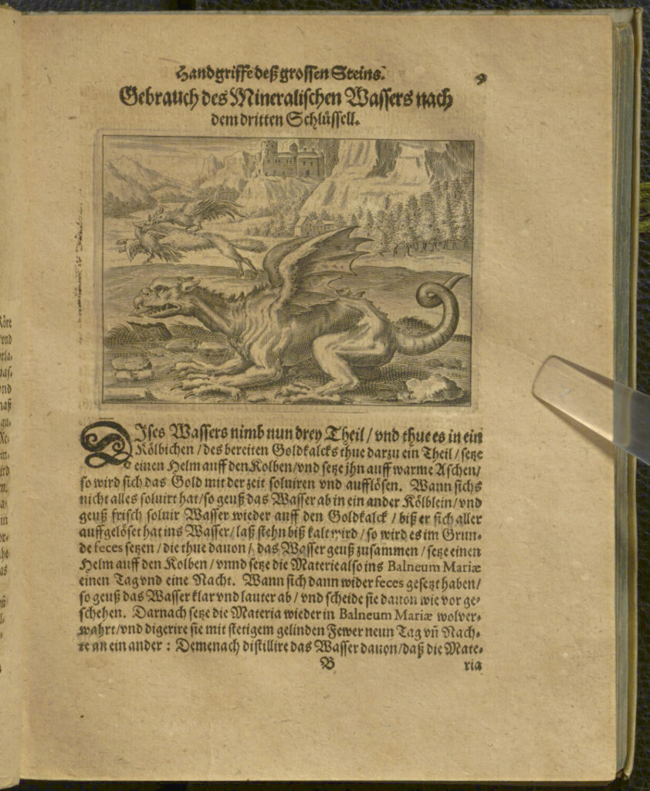
Johann Theodor de Bry / Balthasar Schwan unter Mitarbeit von Matthäus Merian d.Ä. (?), Dritter Schlüssel mit Drachen (1618), in: Fr. Basilii Valentini, Handgriffe uber die Bereitung des grossen Steins, S. 9, in: Johannes Rhenanus (Hermannus Condeesyanus) (Hg.), Dyas chymica tripartita, Frankfurt: Lucas Jennis 1625, UB Frankfurt, Sign. 8° P 194.6015
Verrätselte Tierdarstellungen sind in den Alchemica illustrata ein weit verbreitetes Mittel der Darstellung. Der hohe Stellenwert, den die wiederkehrenden Tiermotive einnehmen, liegt darin begründet, dass sie für verschiedene alchemistische Stoffe und alchemische Vorgänge oder Symbole stehen, also als allegorische Versinnbildlichung. weiterlesen…
Matthäus Merian d.Ä., Titelblatt und Frontispiz Der chymische Chor, in: Johannes Rhenanus (Hermannus Condeesyanus) (Hg.), Dyas Chymica Tripartita. Das ist: Sechs Herrliche Teutsche Philosophische Tractätlein, Frankfurt: Jennis 1625, UB Frankfurt, Sign. 8º P 194.6015 Nr. 1 weiterlesen…
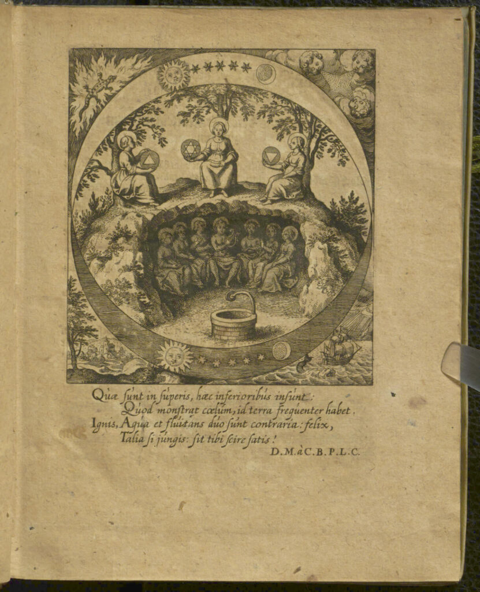
Performative Bildstrategien für Alchemica illustrata
Die erste Tafel mit Adam im Garten Eden, in: Dionysius Andreas Freher, Jeremias Daniel Leuchter, Tables representing man in three different states (dt. Titel Drei Tafeln), Illuminierte Handschrift (ohne Titel), Wasserfarbe und Tinte auf Papier, England, 1717, Add. Ms. 5788, London, British Library
Wiederholt versuchten die Maler und Buchillustratoren, den alchemischen Allegorien der Verwandlung dynamische Bewegung zu verleihen. Von Merian d.Ä. wurde für diesen Zweck unter anderem die Strategie der Kreis- und Sphärendarstellungen verwandt. Auf der doppelseitigen Radierung Integræ Naturæ speculum, Artisque imago für den ersten Band von Robert Fludds Utriusque Cosmi Maioris (1617) hat Merian zehn Himmel in einer Art Scheibenmodell so dargestellt, als ob sie in Bewegung wären. weiterlesen…
Lucas Jennis (Hg.), Herbrandt Jamsthaler, Viatorium spagyricum. Das ist ein gebenedeyter spagyrischer Wegweiser in den edlen Sonnengarten der Hesperidum zu kommen unnd daselbst den güldenen Tincturzweigdess Universals, Frankfurt: Jennis 1625 weiterlesen…
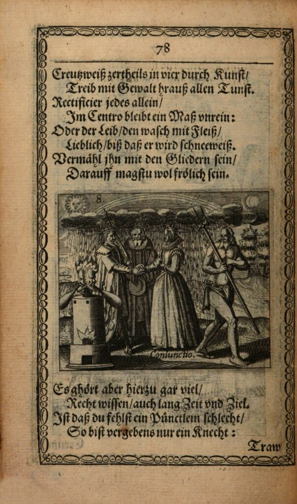